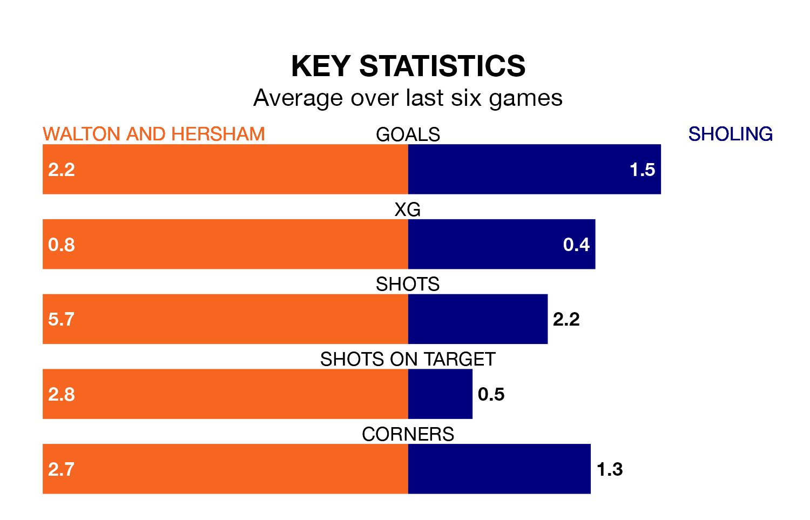

Walton and Hersham are heavy favourites to keep all three points at home in Saturday's kick-off against Sholing.
Walton & Hersham, who sit seventh in the Southern League Premier South with 38 games played, are priced at 1.6 to seal victory at the Sports Ground.
Sitting seven places and 10 points behind them in the table, Sholing are 4.1 to win with *Betting Company*, while the draw is at 4.2.
With 44 goals in 35 games so far this season, Sholing are the league's second-lowest scorers with 1.3 goals per game. But they are conceding fewer than average too, letting in 53 goals at a rate of 1.5 per game.
Walton & Hersham, meanwhile, are above average scorers, with 1.9 goals per game, compared to a league average of 1.7. They have conceded 1.7 goals per game.
The home team are in mixed form in the Southern League Premier South, with two wins and three draws from their last six games.
With a win and two draws over that period, the visitors' form is worse – they have taken five points from 18, compared to Walton & Hersham's nine.
Walton & Hersham's last match was on April 6, a 1-1 draw against Hendon.
Sholing drew 2-2 with Didcot Town last time out, also on April 6.
Updated: 10:01 (UTC), 12/04/24